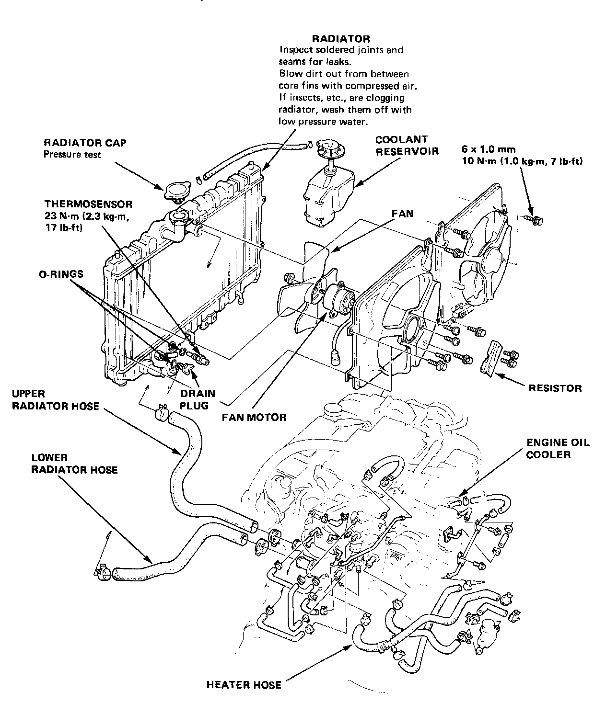

Radiator Cooling Fan Motor: Service and Repair

Radiator
Replacement
CAUTION: System is under high pressure when engine is hot To avoid danger of releasing scalding coolant, remove cap only when engine is cool.
Total Cooling System Capacity (Ind. heater, and reservoir tank):
M/T: 8.8L (9.3 U.S. qt., 7.7 Imp. qt.)
A/T: 8.7L (9.2 U.S. qt., 7.7 Imp. qt.)
1. Drain engine coolant, then disconnect upper and lower radiator hoses from radiator.
CAUTION: If any coolant spills on painted portions of the body, rinse it off immediately.
2. On models with automatic transaxles, Disconnect ATF cooler lines from radiator.
3. Disconnect fan motor electrical connectors.
4. Remove radiator upper support brackets.
5. Pull radiator out of engine compartment, then remove fan shroud assemblies from radiator.
6. Reverse procedure to install.
NOTE:
- Check all cooling system hoses for damage, leaks or deterioration and replace if necessary.
- Check all hose clamps and retighten if necessary.
- Use new 0-rings whenever reassembling.